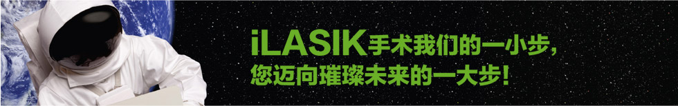

激光视力矫正是指用激光永久性改变角膜（眼球前部的透明组织）形状而提高视力的手术。通常被称为LASIK（医学术语激光辅助角膜原位磨镶术的首个英文字母的缩写）。该手术是目前治疗视力缺陷问题最主要和最有效的方法。
准分子激光是一种紫外激光，在iLASIK手术中，用于对角膜基质层进行准确的重新塑形。使用威视准分子激光的虹膜定位波前像差引导的个性化手术，重新塑形角膜能够精确矫正近视、远视和散光。
飞秒激光是一种红外激光，在LASIK手术中用于制作角膜瓣。使用IntraLase®第五代飞秒激光iFS®制作角膜瓣，可大幅提高手术安全性和准确性。
波前像差技术是通过比较进入您眼睛的光线和进入不需要进行视力矫正的眼睛的光线之间的差异来进行测量。WaveScan®波前像差技术识别和测量个体视觉缺陷的精确度相当于普通眼镜和角膜接触镜测量方法的25倍以上，由其所获得的三维波前像差图像被传输到威视准分子激光，就可以进行精确的个性化激光视力矫正手术。
iLASIK手术是IntraLase®和Advanced CustomeVue®技术的独有组合。IntraLase®技术是通过iFS®飞秒激光在LASIK手术中制作均匀一致的角膜瓣。然后由Advanced CustomeVue®技术通过WaveScan®波前像差仪获得您眼睛独有的视觉缺陷，生成三维波前像差图像，并传输到威视准分子激光，从而进行激光视力矫正手术。
不疼。手术是在麻醉眼药点眼的情况下进行的，所以不会疼痛。您会感觉到制作角膜瓣时轻微的压力，持续时间少于一分钟。
和任何其他手术一样，我们无法保证任何确定的结果。手术效果依赖于个体的具体情况，大多数患者术后视力可以达到术前最佳矫正视力或者更好。
是的。临床研究显示，与术前戴眼镜和角膜接触镜相比，有4倍的患者更满意iLASIK手术后的夜间视力。
1.0是优秀视力的现有标准。但是，临床研究显示，接受iLASIK手术的患者可以获得超过1.0的视力。实际上，iLASIK手术后一年将近70%的患者视力能达到1.2或更好。
不同的手术中心，成功率也不同。在新加坡Parkway眼科中心，99%的患者iLASIK手术后不需要配戴眼镜。
不必担心，准分子激光有三维眼球跟踪技术，能锁定并跟踪虹膜，以补偿轻微的眼球移动，保证完成精确的治疗。
超过40岁，阅读近距离事物有困难时，可以实施唯一被美国FDA批准的单眼视iLASIK手术。该手术对主视眼进行充分矫正，但对非主视眼保留轻度的欠矫，术后不需要配戴老花镜。
是的，大多数年满18岁的病人手术后屈光状态稳定，也永久地改变了角膜形状。仅有很少的病例会发生屈光回退。
手术一结束，就能恢复正常活动了。大多数人手术后24小时就恢复上班和开车了。为保证安全，术后1月内要避免接触眼球和水上运动。
术后前几周内常见的短暂副作用有干眼症、光敏感、眩光和光晕等，大多会随自动消退。术后视力完全稳定需要3-6个月。
在临床研究的基础上，美国FDA批准iLASIK手术用于近视、远视和散光的治疗，并证明它是安全有效的。
FDA的研究表明，iLASIK术后一年：100%的患者不戴眼镜或角膜接触镜能通过驾驶考试 98%的患者裸眼视力达到1.0或更好 70%的患者裸眼视力超过1.0 而且，许多患者表示比术前戴眼镜或角膜接触镜能获得更清晰、更好的全天视觉质量。